Static and stagnation pressures give the most important flow information. Density is determined from ρ = p/RT. Velocity is determined from p₀ – p. Stagnation pressure with stagnation temperature fixes the maximum mass flow rate. Difference of stagnation pressure at two points = measure of flow losses.
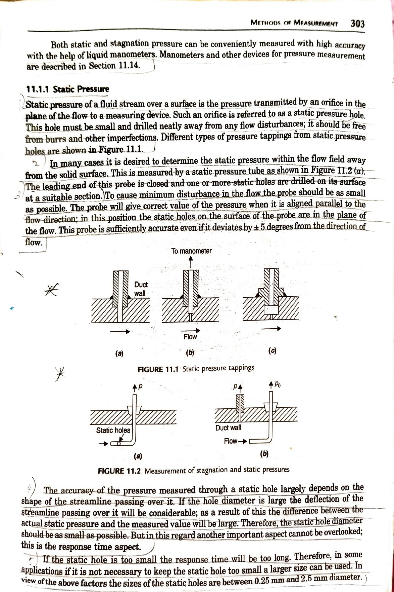
Static pressure is the pressure transmitted by an orifice in the plane of the flow to a measuring device — called a static pressure hole. It must be small, drilled neatly, away from flow disturbances, free from burrs. Diameter: 0.25 mm to 2.5 mm. When measuring away from a wall, a static pressure tube (Fig 11.2a) is used — leading end closed, static holes on surface, accurate to ±5° yaw.
The pitot tube (Fig 11.2b) — a bent stainless steel tube with open end facing the flow — decelerates the flow nearly reversibly to stagnation conditions. Recorded pressure ≈ stagnation pressure p₀. Accurate to ±20° from flow direction. p₀ is a measure of entropy level — its change indicates entropy rise due to irreversibility.
| Low Pressures | |
|---|---|
| Pirani gauges | 10⁻⁵ – 1.3 mbar |
| Mcleod gauges | 10⁻⁴ – 0.1 mbar |
| Diaphragm gauges | min 10⁻³ mbar |
| Simple vertical tube manometer | 0.1 mbar – 0.1 bar |
| Vertical tube mercury manometer | 1.334 mbar – 1.334 bar |
| Medium Pressures | |
| Strain gauge pressure pick-ups | 0.1 – 7.5 bar |
| Variable inductance pressure transducers | 0.05 – 35 bar |
| Piezoelectric pressure pick-ups | up to 350 bar |
| High Pressures | |
| Bourdon type (spiral tube) | up to 75 bar |
| Capacitance type transducers | 0.5 – 3600 bar |
| Bourdon gauge (C-type tube) | up to 7000 bar |
| Strain gauge pressure cells | 7000 – 15000 bar |
Bourdon tube: Most widely used mechanical gauge. Non-circular cross-section tube tends toward circular under pressure — free end moves, magnified for reading. C-type or spiral type.
Electrical transducers: Based on resistance, capacitance, inductance, thermal effects, or piezoelectric effect. Essential for fluctuating/unsteady pressures.
Pirani (thermal) gauge: Thin wire in Wheatstone bridge; heated to ~250°C. At low pressures fewer gas molecules → slower cooling → less current to maintain temperature → current = pressure measure.
In supersonic flow (M > 1), a bow (normal) shock forms ahead of the pitot tube. The tube measures post-shock stagnation pressure p₀₂, not freestream p₀₁. Static taps (far back) measure freestream p₁.
The temperature Tᵣ recorded by any probe is neither static T nor stagnation T₀. Four causes (§11.2):
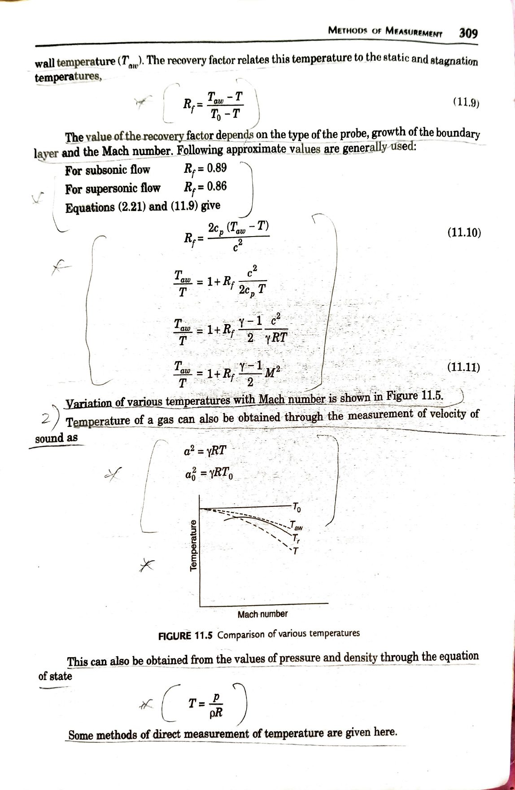
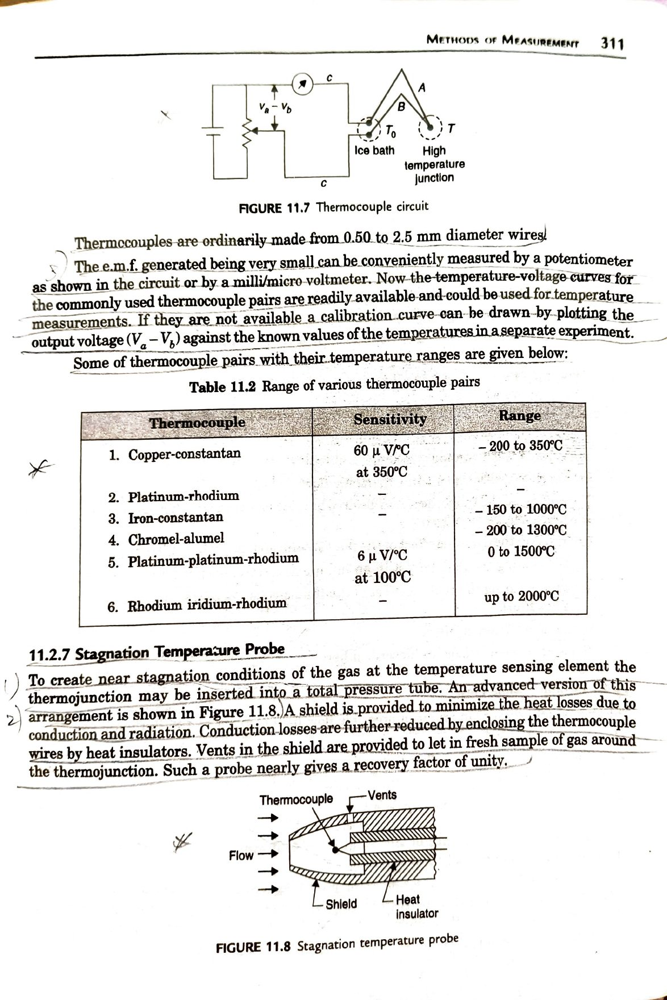
Thermojunction inserted into a total pressure tube (Figure 11.8). Key features:
Tiny windmill with flat plate blades (generally 8), mounted on freely rotating shaft. RPM of shaft = measure of air velocity — transmitted to pointer via worm-and-wormwheel reduction gear. Good for low velocities in small pipes and ducts. Calibrated by standard pitot-static tube.
Tiny wire (d ≈ 0.005 mm) heated electrically. When placed in gas flow, it cools due to convection. Rate of cooling depends on velocity. Two modes:
Wire element (Rᵥ = R₄) held between two needle supports. l/d ratio ≈ 200 — reduces heat conduction from wire to supports to negligible value. Wheatstone bridge: R₁, R₄(=Rᵥ), R₂, R₃ (fixed) and variable R₅. Initial balance: R₁ adjusted. When velocity changes → cooling → R₄ changes → bridge imbalanced → R₅ readjusted to rebalance → different current for each velocity. Output to oscilloscope.
Calibration (Fig 11.14): two curves at two wire temperatures. Higher T_wire → higher sensitivity. Used for turbulence and unsteady flow — small element, negligible disturbance to flow.
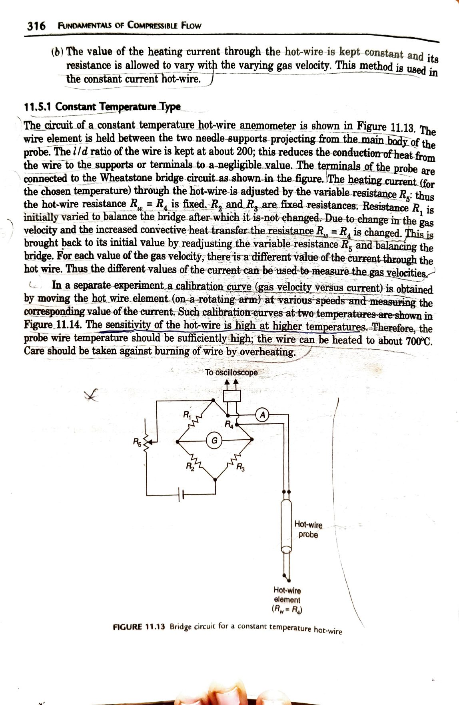
Current kept constant. Temperature (hence resistance) varies with velocity. A micro/milli voltmeter records voltage variation across the wire with gas velocity. Calibration curve shown in Fig 11.16. Limited frequency response — NOT as versatile as CTA. Performance in fluctuating flows improved by dynamic compensation.
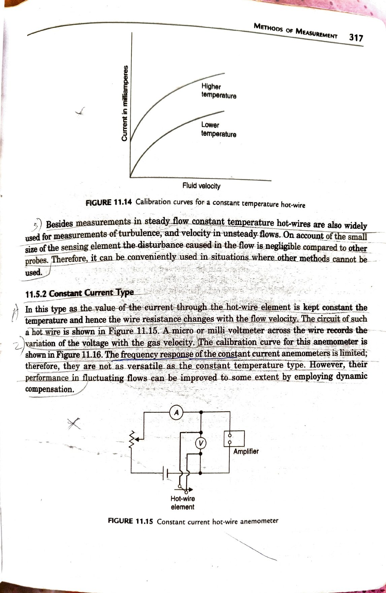
Laser = Light Amplification by Stimulated Emission of Radiation. Scattered light from minute solid particles (~1 micron) in the flow is used as the velocity signal. Two systems:
Lasers: He-Ne (0.5–100 mW, low cost, high reliability), Argon-ion (5–15 W), CO₂ (1–100 W). Higher power → greater noise. Seeding particles (~1 µm) artificially introduced or natural particles in flow.
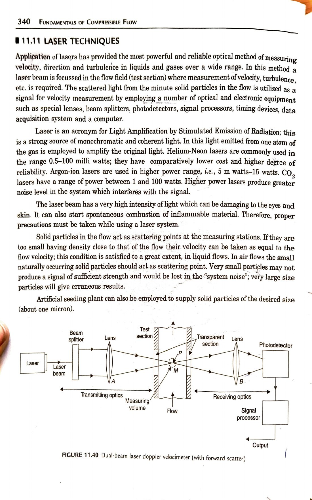
The entire laser system is located on one side of the test section — makes traversing easier. Light scattered from probe volume M is collected back via the same lens A → mirror → lens B → photodetector. Only one transparent window needed. Requires comparatively more laser power than forward scatter.
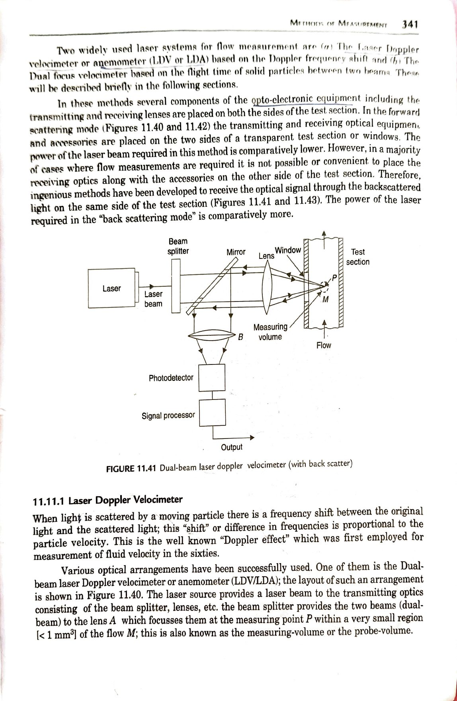
A collimating lens provides a parallel beam of light from a source through the transparent walls of the test section. Shadow picture obtained directly on a white screen on the other side — no knife edge, no focusing lens required.
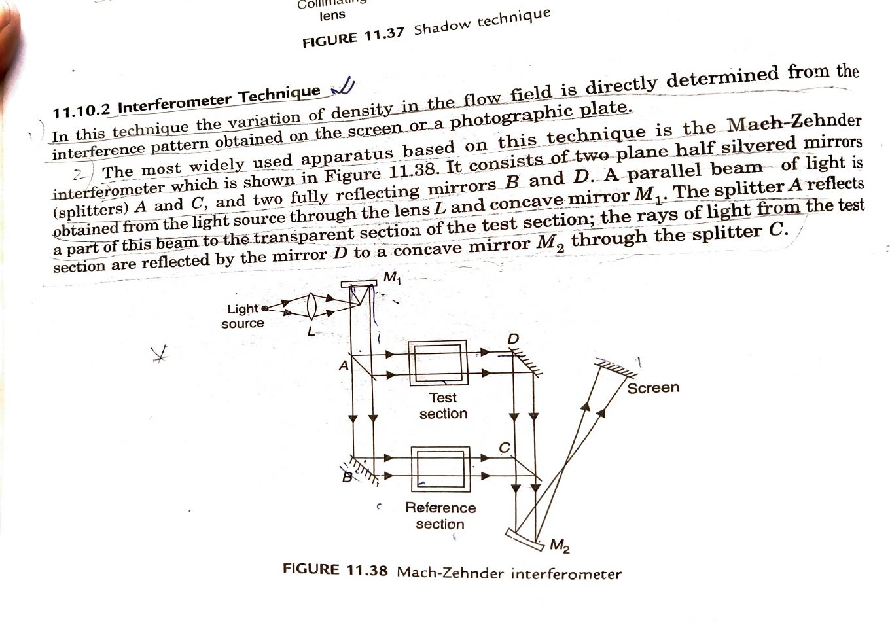
Variation of density is directly determined from the interference pattern on screen. Most widely used apparatus: Mach-Zehnder interferometer (Fig 11.38).
Components: Two plane half-silvered mirrors (splitters A and C), two fully reflecting mirrors B and D, light source through lens L and concave mirror M₁.
Working: Splitter A splits beam into test beam (→ test section → mirror D → splitter C → M₂) and reference beam (→ mirror B → reference section with identical compensating walls → splitter C → M₂). Both beams recombine at M₂ → fringe pattern on screen.
Density gradient ∂ρ/∂x is obtained from varying brightness on screen. Degree of brightness is proportional to density gradient.
Setup (Fig 11.39): Light source → concave mirror M₁ (collimated beam) → test section → concave mirrors M₂ and M₃ → screen. A sharp knife edge at the focal point of M₂ intercepts about half the light. Without flow: uniform illumination. With flow: refracted rays → more/less light escapes knife edge → varying intensity.
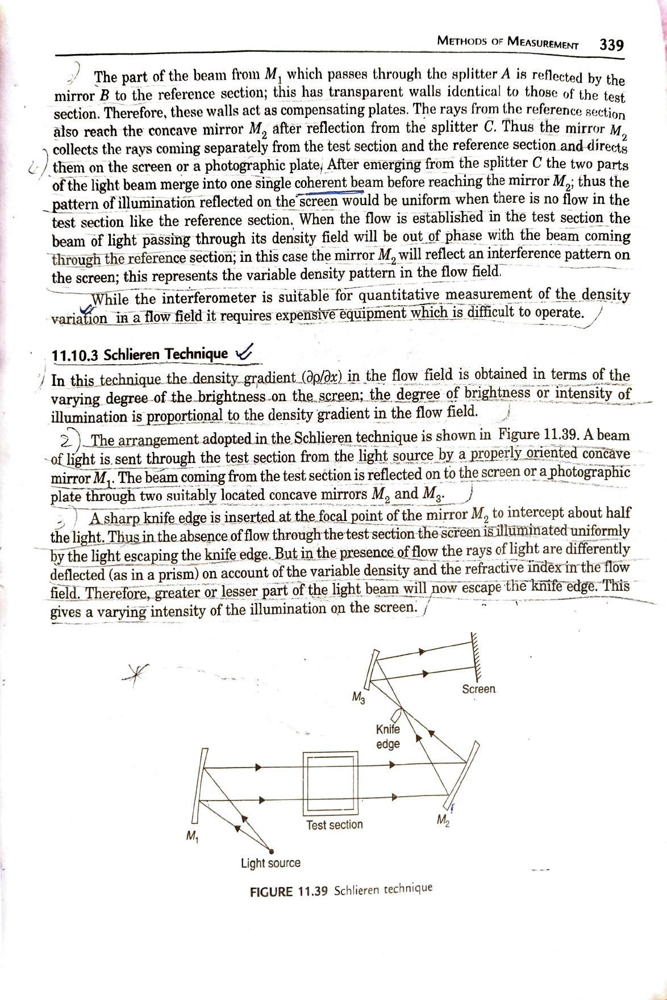
| Feature | Shadowgraph | Schlieren | Interferometer |
|---|---|---|---|
| Physical quantity | ∂²ρ/∂x² | ∂ρ/∂x | ρ (absolute) |
| Key component | Collimating lens only | Knife edge at M₂ focal point | Splitters A, C + mirrors B, D |
| Detects | Abrupt changes only (shocks) | Gradients, BL, plumes, shocks | All density variations |
| Data output | Qualitative | Qualitative | Quantitative (density values) |
| Equipment | Cheap, easy | Moderate cost | Expensive, difficult |
| Reference beam | Not needed | Not needed | Required (compensating plates) |
A shock tube is a blowdown or intermittent tunnel in which high Mach number flow is generated by passing a shock wave through a stagnant gas in a duct.
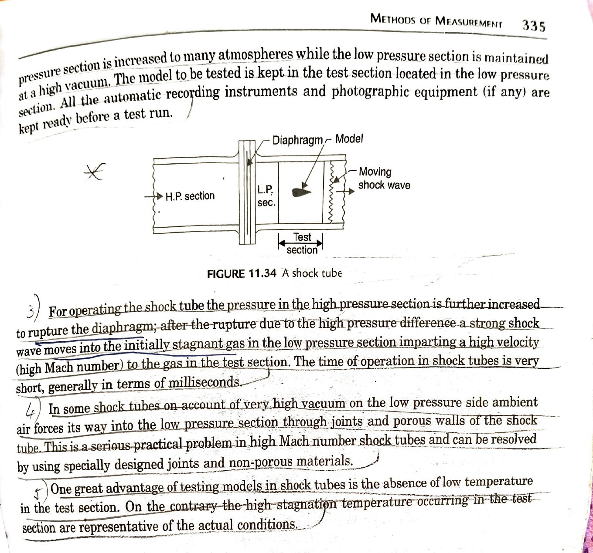
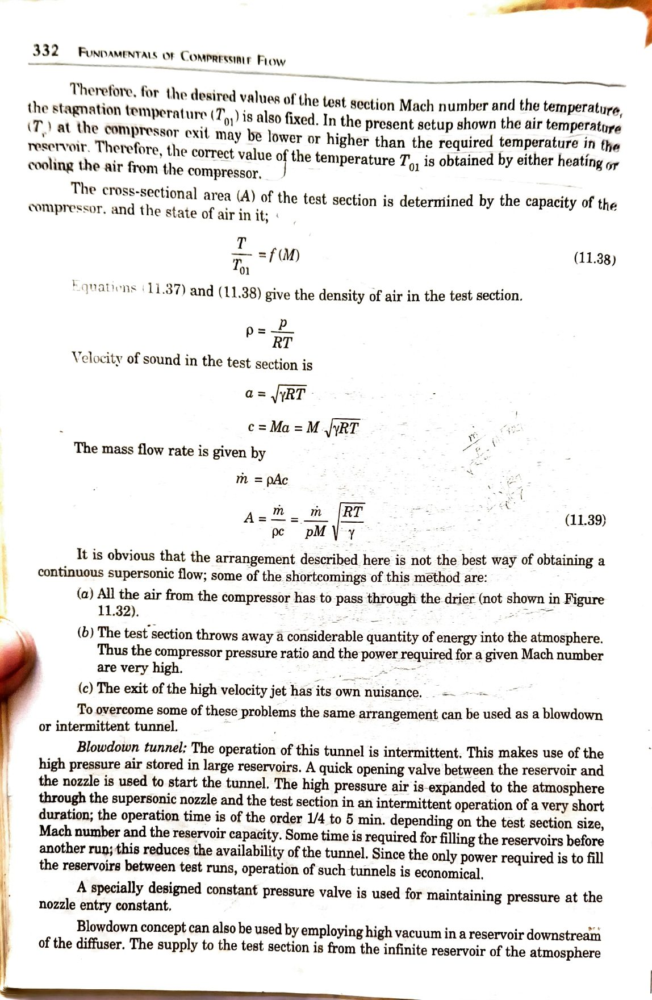
Compressor continuously supplies reservoir. High pressure air expanded from stagnation state (p₀₁, T₀₁) through C-D nozzle to test section. M = f(p/p₀₁) (Eq 11.37). All air must pass through drier. Compressor power very high — kinetic energy wasted to atmosphere. Cross-sectional area of test section determined by compressor capacity (Eq 11.39).
High pressure air stored in large reservoirs. Quick opening valve between reservoir and nozzle starts tunnel. Operation: 1/4 to 5 minutes. Only power needed is to refill reservoirs — economical. A constant pressure valve maintains entry conditions. Can also use high vacuum downstream (atmospheric air as supply).
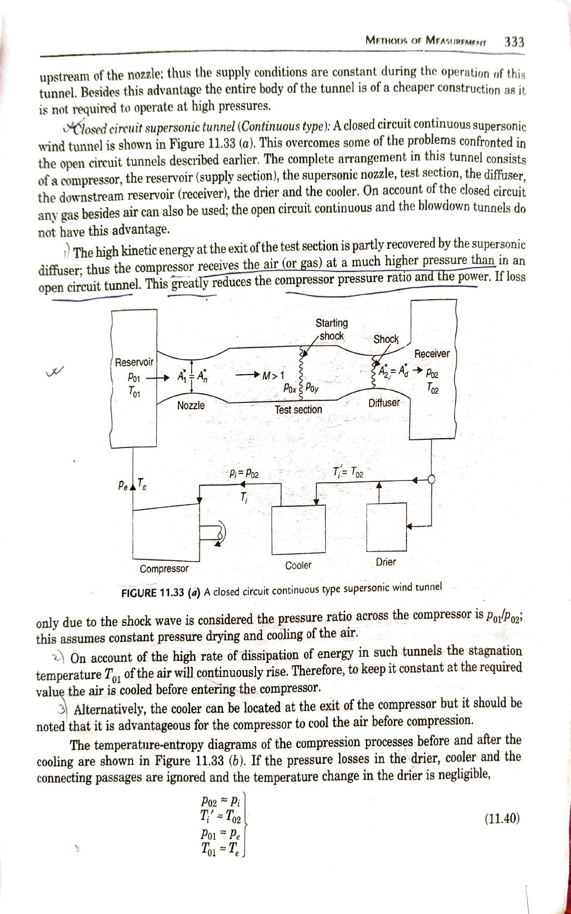
Compressor + reservoir + nozzle + test section + supersonic diffuser + downstream receiver + drier + cooler. The high KE at test section exit is partly recovered by the supersonic diffuser → compressor receives gas at higher pressure → reduced compressor pressure ratio and power (p_r = p₀₁/p₀₂). Any gas besides air can be used. T₀₁ continuously rises → cooler required before compressor (cooling before compression is more efficient than after).